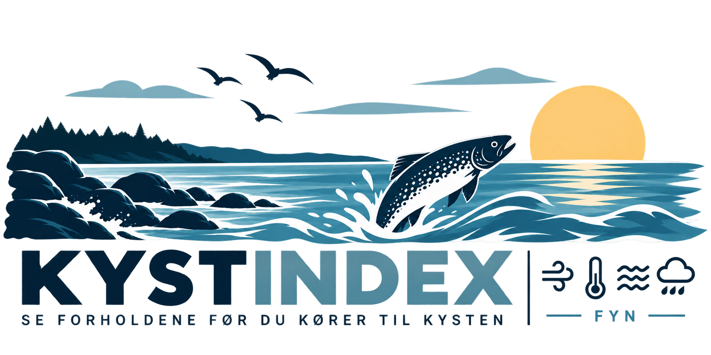

Vind: 7.2 m/s (stød 12.86 m/s) fra SV
Vandstand: 0 cm (→ Uændret)
Vandtemp: 16.0 °C
Status: 🔥 OPTIMAL (Læ / Sidevind)
Vind fra SV (7.2 m/s) giver fine, rolige kasteforhold. Vandstanden er stabilt omkring +0.0 cm. Gode betingelser for at afsøge strækket med en 14-16g line-thru.
Vind: 3.75 m/s (stød 5.92 m/s) fra SV
Vandstand: 25.0 cm (↓ Faldende)
Vandtemp: 16.0 °C
Status: 🔥 OPTIMAL (Læ / Sidevind)
Vind fra SV (3.75 m/s) giver fine, rolige kasteforhold. Vandstanden er +25.0 cm og **faldende**. Fisken kan søge med ud mod rev og dybere kanten, så affisk skrænterne grundigt.
Vind: 7.2 m/s (stød 12.86 m/s) fra SV
Vandstand: 0 cm (→ Uændret)
Vandtemp: N/A °C
Status: 🔥 OPTIMAL (Læ / Sidevind)
Vind fra SV (7.2 m/s) giver fine, rolige kasteforhold. Vandstanden er stabilt omkring +0.0 cm. Gode betingelser for at afsøge strækket med en 14-16g line-thru.
Vind: 10.31 m/s (stød 12.6 m/s) fra SV
Vandstand: 0 cm (→ Uændret)
Vandtemp: N/A °C
Status: ❌ DÅRLIG (For kraftig vind)
Vind på 10.31 m/s (stød op til 12.6 m/s) skaber for meget uro, opslået bund og løsrevet tang. Det bliver svært at fiske effektivt her.